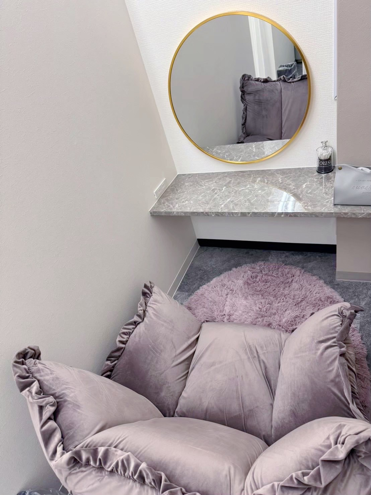
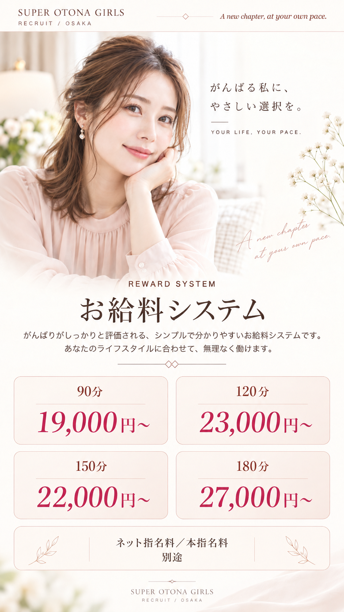
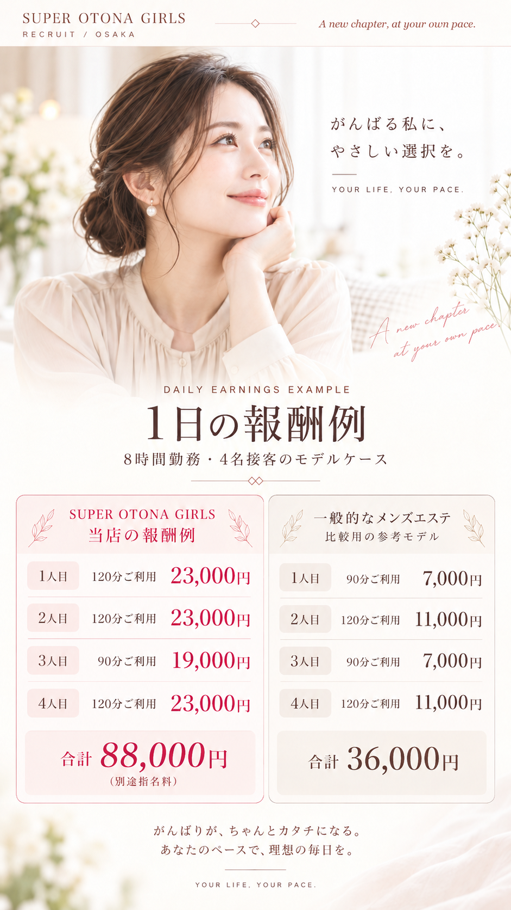
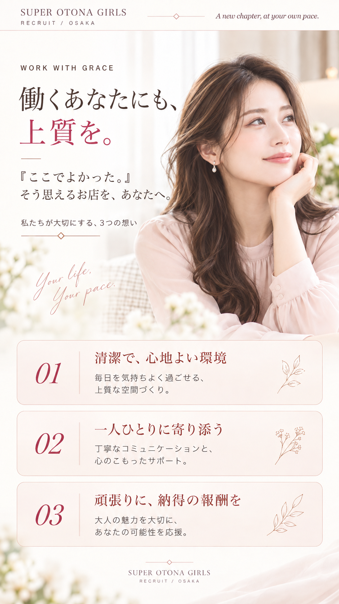
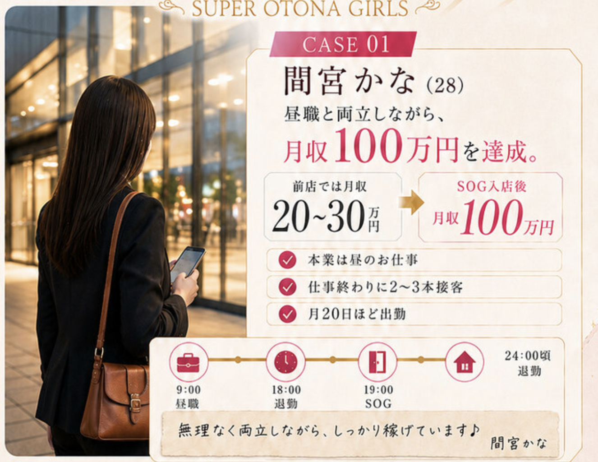
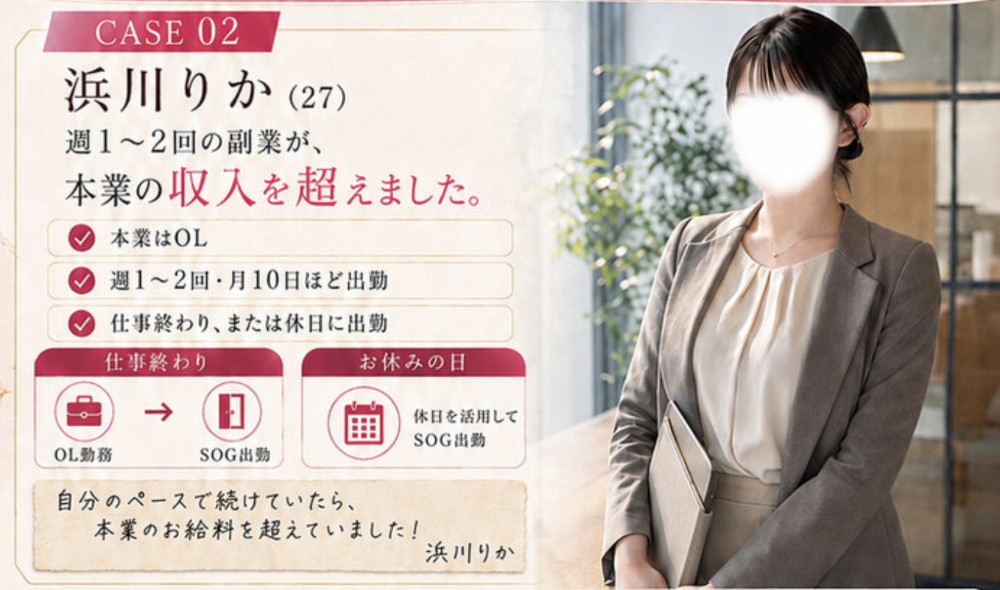

仕事終わりの時間を相談
本業の退勤時間に合わせて、
出勤の開始・終了時刻を確かめる。
未経験・昼職とのWワークをお考えの方へ
はじめての一歩は、相談から。
仕事内容も、働き方も。
あなたのペースで確かめてください。
はじめまして。
SUPER OTONA GIRLSの妖精
オトちゃんだよ♪
気になることから、
お話ししてみませんか♪
大阪・メンズエステ「SUPER OTONA GIRLS」の求人サイトをご覧いただき、ありがとうございます。
当店は、アロマオイルを使用したトリートメントを提供するホテル型メンズエステ店です。
大阪で展開するSUPERグループの3店舗目として、
「大人の女性が、その人らしい魅力を活かし、より輝ける場所をつくりたい」
そんな想いから誕生しました。
アロマオイルを使用した
トリートメントを通じて、
くつろぎの時間を届けるお仕事です。
セラピストは、男性のお客様と会話をしながら施術を行います。お客様が日常から少し離れて、心と体をゆっくり休められるように。
落ち着いた会話や、自然な気配りも、お客様に心地よく過ごしていただくための大切な魅力です。
アロマの
トリートメント
心地よい
リラクゼーション
癒しの時間
会話で
リラックス
心と体の
くつろぎ
当店は、リラクゼーションを目的としたメンズエステです。
性的なサービスは行っておりません。
口を使う
性的なサービス
キスをする
サービス
衣装を脱ぐ
サービス
お客様から
性的な接触を受けること
お客様に心地よい時間をお届けするために、
会話や気配り、相手を思いやる接客を大切にしています。
仕事内容も、衣装も、接客の範囲も。納得したうえで選んでください。
サービスの具体的な範囲や、困ったときの対応方法は、面談時にご確認ください。
知らないことがあるのは、あたりまえ。
仕事内容も、お店の運営も、一つずつ確かめてから。
まず、知っておいてほしいこと。
お店の場所がマンションかホテルかという呼び名だけで、適法性や安全性が決まるわけではありません。どんなサービスを行うか、どのように運営されるかを、働く前に確かめることが大切です。
警察庁は、メンズエステを装い、禁止区域のマンション個室で性的サービスを行わせた検挙事例を公表しています。警察庁の資料を見る
SUPER OTONA GIRLSはホテル型のメンズエステ店です。ホテルで働くことに不安がある方にも、施術内容や勤務の流れを面談で説明します。
SUPERグループには未経験から始めた女性も在籍。入店前の講師による研修や女性スタッフへの相談体制について、始める前にご案内します。
グループで培ってきた運営・集客の経験を活かし、一人ひとりが働きやすい環境づくりを目指します。
仕事内容を確認するお仕事中も、待っている時間も。
心地よく過ごせるように。

写真を選んでご覧ください。
本業も、休みの日も、自分の時間も。
希望する働き方をお聞かせください。
My life.
My own pace.
本業の退勤時間に合わせて、
出勤の開始・終了時刻を確かめる。
月にどのくらい出勤したいか。
生活に合う日数を一緒に考える。
本業や他のお仕事との両立も、
勤務条件と合わせて確認する。
コースごとの報酬と、
1日の計算例。



「自分なら、どのくらい？」
いっしょに計算してみようね♪
昼職との両立を考える、2つのモデルケースです。

間宮かな 28歳
本業を続けながら、月20日ほど出勤。仕事終わりに1日2〜3件の接客を想定した働き方です。
90分 × 2件 ＋ 120分 × 1件 ＝ 61,000円／日

浜川りか 27歳
本業はOL。週1〜2回、月5日ほどの出勤を想定。仕事終わりや休日に働くスタイルです。
90分 × 2件 ＋ 120分 × 2件 ＝ 84,000円／日
応募を決める前に、
希望や気になることをお聞かせください。
まずは質問からで大丈夫です。
お気軽にご連絡ください♪
報酬、勤務時間、仕事内容などを詳しくご説明します。あなたに合う働き方や報酬の条件を一緒に考えます♪
未経験の方も、基礎から学べる研修です。女性講師をご希望の場合は女性講師が担当しますので、遠慮なくお伝えください♪
研修が終わり、準備が整ったら、いよいよデビューです♪
面接 約30分 ＋ 研修 約90分最短約2時間でデビュー可能
小さな疑問も、
一つずつ確認してください。
現在ご案内しているコース報酬は、70分15,000円〜、90分19,000円〜、120分23,000円〜です。適用条件や指名料、控除の有無など、詳しい内訳は面接時にご確認ください。
出勤日数と接客件数によって変わります。報酬シミュレーターでは、ご希望の働き方に合わせた計算ができます。表示額は予約や収入を保証するものではありません。
支払い時期・方法や諸費用、控除については、現在掲載用の条件を確認しています。応募を決める前に、金額の内訳とあわせてLINEや面接でお尋ねください。
掛け持ちは可能で、同業種との両立も含まれます。昼職の終業後や休日など、ご希望の時間帯を面接時にお聞かせください。
現在の募集情報では、月1回・1回6時間以上が勤務条件です。営業時間は12:00〜27:00。出勤日と時間は面接時にご相談ください。
ご希望に合わせたシフトをご相談いただけます。具体的な提出方法や変更の期限など、運用面は面接時にご確認ください。
アロマオイルを使ったトリートメントを提供する、ホテル型メンズエステのお仕事です。お仕事の内容やサービスの範囲は仕事内容のご案内で確認できます。衣装や実際の施術ルールは、始める前にご確認ください。
デビュー前に約90分のマッサージ研修をご案内しています。初めての方は、わからないことをその場で確認しながら進めてください。女性講師をご希望の場合は相談時にお伝えください。研修内容や担当講師は事前にご確認いただけます。
気になるサービスや対応があれば、面接と研修の段階で遠慮なくお尋ねください。接客中の連絡方法や困ったときの対応手順も、デビュー前に確認しておくことをおすすめします。
写真の掲載範囲や顔出しの可否、プロフィールの扱いは確認中です。掲載前に希望を伝え、使用する写真・掲載先・公開期間・削除の方法を確認してください。
SNSの利用条件は現在確認しています。ご自身のアカウントを使いたくない場合も含め、応募前に希望をお伝えください。
心配な点はLINE相談や面接で具体的にお聞かせください。予約時の顧客確認、トラブル時の連絡先、接客を中断する手順、個人情報の取り扱いは、働き始める前に確認したい大切な項目です。
はじめての一歩に、不安はつきもの。
応募を決める前に、
あなたの希望や気になることをお聞かせください。
ちょっと気になることでも大丈夫だよ♪
オトちゃんと、まずはお話ししようね。
勤務地や勤務条件など、応募前に知っておきたい基本情報をご案内します。